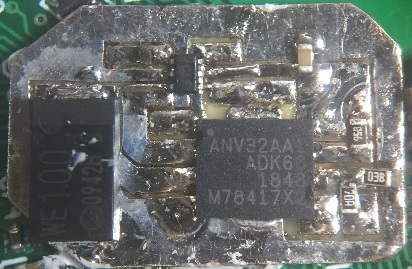
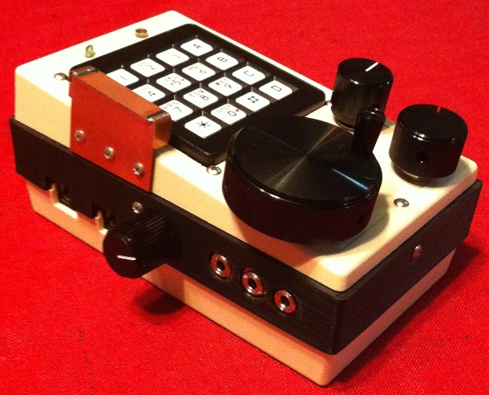

IC-900 Remote Controller Clone Project, Part II
Updated 09/29/2021
(Back to the Projects page...) (Back to Part I...)|
Welcome to Part II… Contrary to the tone at the conclusion of Part I, the software development has progressed without interruption and just a scant 4 weeks on, the progress is very good. All basic radio functions have been coded and pass basic tests. This means that the unit can function as a multiband radio with the main features implemented: Frequency adjustment, duplex selection, TX offset adjustment, CTCSS tone on/off and adjustment, Volume/Squelch adjustment, HILO power control, rev/check feature, TS (freq step select), and band selection. Progress has been rather quick owing to previous work (see this discussion about the begninnings of my earlier attempts at building a "radio" using ICOM UX modules). Still, progress has not been without issue or pain. First, I still had some hardware gremlins to address. These didn't show up in the initial validation, but became obvious once I started exercising the user interface. Chief among these were the solder shorts (all of my own making): one on the ICOM key/display board, and one on the flex-cable connection to the new ARM board. Additionally, the failure of the SIN (Serial IN) comm connection was a bit surprising. Here, the data separator circuit was copied almost verbatim from the ICOM design, and it was tested good! However, when attempting to use the system I discovered that the data didn't look at all good on an o'scope (and, no surprise, wasn't being received by the MCU). There was a significant "RC" component to the waveform suggesting that a load resistor on the power/data signal was needed to get the data separator to work correctly. Curious. After considering the issue, I realized that I had tested the data separator in parallel with the working IC-900 controller that I had borrowed. Thus, that controller loaded the signal in such a way that my design did not. This load turned out to be in the form of the Iq(dc) of the LM7806 voltage ragulator used on the ICOM design. For my design, I used a switching regulator circuit which has a substantially lower Iq(dc). The "loaded" I(ac/dc) was in the form of a high-frequency pulse train used by the switching regulator. This conspired to remove the steady Iq(dc) of the original ICOM regulator circuit. A typical value of Iq(dc) for the LM78xx series is about 5 mA and a 2.2K resistor accross the 11(ish) volts at the input to the data separator provided that load rather nicely. Speaking of the switching regulator, I ended up replacing a couple of those parts because I missed a subtlety of the IC's enable pin. Most regulators I've encountered allow the enable to be tied to Vin to force the part to be on all the time. With the part I used in this design, there is a 6V max limit on the voltage applied to the enable pin. An easy fix, but I had used this part before by connecting the enable directly to Vin and hadn't experienced this issue. Apparently, 8 or so volts doesn't have the same effect as 10 or so volts. The fine-print in the datasheet identifies a "zerner diode" connected across this pin to GND. The Vz ("knee" voltage) wasn't clearly stated, but it must be greater than 8V, but less than 10V. Delayed learning... Drat! Lastly, I found that I needed to add a coin-cell battery to maintain the ARM's HIB RAM so that I could easily save the radio's state between power cycles. When I originally started down this design path, I was very pleased with myself at planning to use on-chip EEPROM to maintain the radio channel memories. A vast improvement over older designs (including the IC-900) as it elliminates the need for a battery and all the mainenance headaches that come with it over time. However, I forgot about the fact that not only are there channel memories, but the overall state of the radio needs to be remembered during power-off. This includes many variables that are highly transient and would not typically be maintained in EEPROM because they can be changed often (such as settings for VFO, volume, squelch, etc...). One option is to monitor the supply voltage and produce an interrupt when power is removed. The idea is that the hold-up capacitance on the regulators offers a measure of time delay between the loss of primary power, and the voltage decay at the output of the 3.3V LDO. If this delay is long enough, and repeatable, it could be used to store "transient" data to EEPROM. Otherwise, a battery will be needed. The jury is still out on this one. How NOT to write real-time code… Up to a point, I had been focused on hardware and low-level software. Once the hardware was no longer an issue (it is often NEVER, no longer an issue, I'm afraid), I had to switch gears and start thinking more about the user interface (UI). I had a template to work from in the form of the original controller operation. However, I wasn't allowing that to limit what was possible. But in the begining, I was mostly concerned just with the basics. Things like, get the S-meter to work and display the frequency. Then, get the radio part to work at the indicated frequency. Receive first, then transmit, and on from there. The work I'd done on the low-level code paid off as I found almost no issues with the basic I/O between the UI and the radio. This allowed the focus to remain on the UI. Rather quickly, I had a basic T/R radio. Soon after, I could adjust the frequency and CTCSS tone. Before I knew it, I was left with only the memory function as the last major feature, plus some minor dangling threads. But let's not skip too far ahead just yet. To start out, I had to come up with a UI that worked and wasn't too easy to break with software changes. Since I do bare-metal design, I have to take extra measures to ensure that there are no "burrs" in the code. These are "loops" where the code has to wait for something to happen, or a time delay to transpire, before continuing on. Such coding structures bog-down the code execution and can often hang the system because the thing that is being waited on needs processing to happen. The result is that one must "un-roll" the logic and slice it into "events" that can be trapped and acted upon (quickly). A ho-hum RTOS (Real Time Operating System) does all that for you, but in the bare-metal world, you have to think in "slices" - all of the algorithms have to be broken into steps that can be executed in stages. There are a couple of ways that I accomplish this. One is to use the concept of state machines, and another technique is to use "change" flags where execution is triggered when a data value changes. To make a simple state machine, a "state" variable is created and a corresponding state diagram is sketched out. For each "event", a state name is assigned (these become numbers in the code, but we can assign names to the numbers to help the code make sense). The state variable feeds into a switch() statement which directs the program flow to the identified "event". The code at that event runs in sequence with only the briefest of delays (ideally) before exiting the switch() statement. If conditions warrent, the "event" will modify the state variable to point to another event on the state diagram. In this way, one event can direct flow to another event to accomplish the task at hand. Along the way, various resources, such as GPIO or timers, are also employed to regulate the flow and direction of the code. As long as the switch() statement is executed at some minimum rate, the state machine will progress through the state diagram over time and as external inputs dictate. Other switch() state machines using other state variables can then all be run in sequence to accomplish multiple tasks in what appears to be parallel execution. This is essentially what an RTOS does, but you don't have to think about it as much with the RTOS. For simple systems such as the one at hand, the thought overhead can be managed, which can reduce the system overhead required vs. that required to run an RTOS. One still needs to be vigilant about what the code is doing (as we shall see here...). There are a lot of RTOS options out there. You can even write your own (I once wrote a simple one for the 6502, many moons ago). I'd argue that I essentially write an RTOS into my bare-metal designs. However, in doing so I have to re-invent the wheel for each new project. Most of my new designs are generally evolutions of something I've done in the past, so I end up re-using code often enough that the coding efficiency is not poor enough to scrap all of my past work and jump onto the RTOS train. While it generally works for me, I'm not advocating it for all. I think it is important to excercise bare-metal skills when one is developing for real-time microcontrollers, but on the whole, using some kind of COTS RTOS is going to be more efficient. Still, if you are game, check out the CCS6 project and source file github repo. Five-pound bucket - 10 pounds of , er, "stuff"… The primary issue with this application is actually one that an RTOS can't really help much with - the issue regards resource management. In this case, that of the LCD display. The problem revolves around the fact that there are a limited number of pixels in the viewing area and too many "items" that need to be displayed. As a result, some of the display fields have to be multiplexed from different data sources. For example, there are two bargraphs in the display area, one for main S/RF and one for sub S/RF. However, a bargraph would be helpful to display volume and squelch. To cover all these bases, we'd need 6 bargraphs in total. Since there are only two, we have to timeshare the bargraphs which means that there has to a method of selecting which resource is to be displayed. With only 7 bar-segments, I also wanted more resolution (the volume and squelch have a range of 0 - 34), so I decided to use the memory number digit to get a fine resolution of volume/squelch changes. By implication this means that the memory digit resource must also be multiplexed. All in all, I'd end up spending most of my time managing the multiplex operations. With the myriad of features that I needed and wanted, this has become a bit of a challenge. Still, having been through this before, I at least knew what I was up against. The resulting code is reasonable, tho not perfect. Considering it from an outsider's perspective, the code would likely be onerous to modify because there are lots of opportunities for something changed at point "A" to break something over at point "W". It is my best effort, and I've generally done an OK job at traking down the breaks, but it still could stand with some improvement. Code comments are my only countermeasure at this point, so I am not likely to re-attempt the design unless some other influence intervenes. To try and keep everything balanced, I organized the software into "processes" that are more-or-less focused on a particular resource or activity. These process functions are called in-order from an idle point in the command-line serial character polling function. As long as none of the processes enter any sort of long wait loop, the tasks all appear to essentially execute simultaneously. This is actually something that also must be kept in mind - the "appear" part in particular. All of the radio communications are handled in radio.c, and all of the User Interface (UI) operations are in lcd.c (the rest of the source files pertain mostly towards the interrupt and initialization resources). The UI is divided between inputs and outputs, with the inputs from the user and from the radio driving operations to the display and the radio. Many paths cross which is part of why there are many options for breaking things. However, there are no real alternatives given the task at hand and the limits of the previously fixed LCD space.
Figure 1. LCD "pixel" map with pixel names. The pixel map of Figure 1 illustrates what there is to work with. The LCD is depicted in the center, and the major areas are broken out around the periphery. Each break-out roughly corresponds to a "domain". The frequency displays (M00 - M6 and S00 - S6) are the main "action" point where numberic or symbolic strings can be displayed. The bargraphs are the primary graphical display for amplitude data. The memory# digit (M7/S7) is primarily for just that - the memory number. The "stock" and "new" indications are explained below:
To accomplish the multi-use aspects of the display features, a mode and timer scheme was employed to regulate those sections of the display that have multiple functions (these flags/timers also control the application of keystrokes). Part of the execution loop polls the timer for the active mode and clears the mode when the timer expires. Each coincident feature needs its own flag and timer (not all have a timer, such as the tone adjust mode). In addition to the mechanics of the sharing interfaces, there needs to be a signal to the operator as to what is going on. For example, one thing I didn't like about the IC-900 was how the squelch and volume adjustments were accomplished. The SRF meter is deployed, but only if you hold down the corresponding button. Also, there are only 7 segments in the bargraph, but 34 steps in each adjustment. I wanted some acknowledgement of each change, so I decided to use the memory number digit. The numbers "0" - "4" would be a good choice, but then how would one distinguish these memory numbers from a volume or squelch adjustment? I decided to implement a unique segment pattern for the lower "digit" of the adjustment, as shown in Figure 2. None of the patterns shown are valid memory numbers so one can easily distinguish that there is an adjustment in progress (squelch is displayed in the main-band area, and volume is displayed in the sub-band area).
Figure 2. VOL/SQU adjust low-order symbol progression (the MEM# digit). The KEY Point… Figure 3 illustrates the IC-900 control unit layout. Of particular interest here are the keypress locations (buttons). These are the primary user input media for the system. The list below describes the button uses. Some of the button meanings have been usurped here to improve the operation of the radio. For example, on the IC-900, the band switch is accomplsihed by entering the SET mode, then moving to the BAND sub-menu, then selecting the band. Compared with the IC-901 (which has a dedicated BAND button), this is a lot of effort in order to switch bands. Since there is an MR and a VFO button, I decided to use MR to toggle between VFO and memory modes, and use the VFO button as the "BAND" button.
Figure 3. IC-900 Control Unit.
The "Focus" column indicates what a key's focus is (main or sub, or global). "(hold)" means that the button is pressed and held for at least 1 second. At this point, a double-beep is emitted from the beeper and a key event is generated with a "hold" attribute to differentiate it from the initial keypress. There is also a "release" attribute, but this is only used for the CHECK button. Note: for any case where "any key to cancel" is invoked, the key functions are suspended until after the key-press which performs the cancel operation. The same flags used to direct display updates are also employed to steer the inputs. In some modes, certain keys change function, or serve as "cancel" keys. The dial and microphone up/dn inputs also must be re-directed according to what parameter is the current focus of control. Because of the separation of "input" and "output", the mode flags must be handled in separate locations. In this way, the "loop is closed" which is to say that the cause and effect are appropriately linked via the software. Note that there are actually two input sources (the user and the radio), and two output sources (the display/user and the radio) even though there are just two distinct entities (the user and the radio). Perhaps this seems obvious, but it must be kept in mind when fashioning the UI because input from the user must generally be fed back to the user as well as sent to the radio. All these interconnections change when there is a mode change, so care must be taken when handing data that needs to be transferred between software modules. Because this system makes extensive use of buffers, it is generally not an issue for a module to stop taking data from a particular resource when a particular mode is in effect. Once the mode returns to "normal", the data flow resumes and no loss of continuity occurs. Sometimes this comes in the guise of buffering change flags rather than data. While a data source is "muted", several changes may occur. The current data may be have been replaced several times, and may even have returned to its original state. However, the changes are buffered which means that the system will still react to the data and update the particular resource. This saves a lot of buffer memory as the change flags generally only need one word as they can be "OR'ed" with new changes which still "remembers" old changes. The Same, only more better… Overall, the operation of the controller is similar to that of the ICOM version. However, there are a couple of innovations that are worthy of note. The first is rather ho-hum, but useful to a degree. I re-implemented (and modified) my 7-segment alphanumeric character set (first developed for my GPS Wall Clock -- and no, I'm not the first to attempt this) to allow for more informative error messages as well as for text memory names. There are only 6 characters available in the frequency display space but this will accomodate any known call-sign, and implementing a sliding message display will allow a wider display message. In addition, there are a few characters that are non-ideal, but are the best one can manage with only 7 segments. The image below illustrates the character map for the numbers and letters. Preference is given to lower case characters. Knowing this helps resolve a couple of conflicts for "u" (u) and "U" (V). The other characters of questionable merit are "K", "m", "w" and "x". See what you think:
Figure 4. 7-segment alpha-numeric character map ("font").
Figure 5. "KE0FF" in 7-segment font. All of the characters are unique, if cryptic, which elliminates problems of context. It turns out that call signs have a limited set of syntax rules which end up causing problems if one tries to use any of the numerals as stand-ins for an alpha character (e.g., using "6" for upper case "G"). "W6GY" thus becomes "W66Y" in the display - which leads to the question: how does one differentiate "W6GY" from "WG6Y" in such a situation? Hence the importance of uniqueness. While this "font" is certainly not the best way to accomplish a plain text display, after much consideration, trial, and error I think that it is as good as one can get considering that the only other option is no option at all. This, at least, offers some means of better managing the considerable number of memories that will be available. As an aside, I think it rather unfortunate that two of the four possible callsign prefix characters for the US are "w" and "k". The second innovation is what I'm calling "thumbwheel mode", alluded to previously. One of the main drawbacks with the IC-900 (and IC-901) is the tuning. All of the tuning is accomplished using either a single dial, or the microphone up/down buttons. A MHz mode and frequency step (TS) option are offered which helps somewhat, but you can still be stuck tuning through numerous dial clicks with purposeful forethought to get to the desired frequency as quickly as possible. While a direct entry method is planned using the bluetooth interface, I needed something in the meantime to cover the gap. The thumbwheel mode fills this gap and is really just a variation on the original MHz mode. In thumbwheel mode, the system starts at the highest moveable digit for a given band (e.g., 100 MHz for the 1200 MHz module, or 1 MHz for the 10m module). The dial adjusts that digit (which flashes to identify it) and the MHz button steps to the next digit to the right (or back to the left-most moveable digit if all the way to the right). You can move anywhere in the band in about 5 seconds without trying all that hard. WAY better than the original controller. A small reward for being in control of the software. Meanwhile, back at the NV Memory farm… Unfortunately, the whole on-chip memory situation has been constantly eroding. After working the numbers and trying to eek out as much compression as I could muster, I just couldn't get as many memories stored as I would have liked. This, coupled with the NVRAM issue (requiring a battery to save the radio state) pushed me further and further away from on-chip memory until it became clear that I needed another answer: an external, non-volitile memory with at least 8K bytes of storage. I had originally considered making provision for an SPI memory, EEPROM or NVSRAM, when I was designing the PCB for this project. The problem was, there just wasn't any GPIO left. However, now that I really need such a device to alleviate my memory issues, I wish I'd spent the time earlier. The good news is, given a clear need, I was able to fanagel the I/O with the help of an analog switch allowing the connection of an SPI memory. It cost the "strap" GPIO, but that was a pale answer to the diode matrix configuration system of the original controller so it won't be sorely missed. Since the SW is open source, one doesn't really need board-level configuration options. I multiplexed the memory MISO (Master In, Slave Out) connection with the LOCK switch, and used the "strap" GPIO for the memory chip-select. The rest of the signals were tapped from the LCD serial bus. I briefly noshed on the prospect of running a queued SPI, which would reduce the application load. This makes sense as there will be a lot of traffic going to the external memory (the return path is only really active at power-up). However, since the SPI would be shared with the LCD chips, this would require a bullet-proof resource sharing mechanism. The results of this would ripple throughout the LCD display code. A further complication is that I would not be able to use the built-in SPI (SSI in TI/ARM-speak) but rather would have to use a bit-bang approach. This is due to the available I/O for MISO. None of the available peripheral pins for MISO were easily shareable, so the effects of forcing this issue would also ripple throughout the design. To mitigate these issues, I settled on a couple of comprimises: 1) use an interrupt timer to create a more consistent bit-rate system (increases peak bit-rate). 2) modify the NVRAM mirror transfers to limit themselves to only the bandid that is being modified. This 2nd approach would yield the greatest results since it would reduce the amount of data transferred up to 8-fold for any given change event. The other mitigation was to use a "shadow" NVRAM device with an "auto-store" feature. These devices have been around for a while, but have not made it into the mainstream of popular design culture. They are unique and offer some significant advantages. Firstly, they are an SRAM core that features "infinite" write capability with effectively no write-delay (EEPROM can require up to 10ms per write-cycle). Second, there is a "shadow" memory of EEPROM cells that can copy the entired SRAM array in a single write cycle. Memory can be moved to/from the EEPROM array at will and on power-up. The auto-store versions will automatically copy the SRAM data to the EEPROM array when power is removed (a dedicated, large-value capacitor is required - typically about 100uF). These devices and their attendant capacitor are somewhat pricey in terms of consumer-grade electronics financial requirements, something like $6 for the pair. However, given that this cost is less than the cost of UPS ground shipping, it isn't really a concern in this case. What is a concern is that the solution directly confronts the issues at hand and offers solutions that can be implemented with minimal effort and maximum results. Photo 1 shows the memory chip installed next to the MCU. 
Photo 1. NVRAM S.C.A.B. (Supplimental Circuit Addition Board) installed next to the controller MCU. One consequence of this choice of device is that it is rather large, in terms of bytes that is, 128K bytes to be exact. As of this writing, the entirety of NVRAM requirements for the controller is around 6000 bytes. If we limit ourselves to only use 64K bytes of theNVRAM, we can squeeze up to 10 copies of this data into this one device (more than I can think to need). This allows one to maintain several different "radios" with completely different configurations (most notably, stored memories). A user key sequence would allow the radios to be selected on demand. This would allow for several memory "banks" that could be used on a long cross-country journey, for example. Interestingly, this is just how the memory world is these days. 8K or 32K byte memories are almost a thing of the past with few new devices in these size categoies being manufactured. So, one is not rewarded in any significant way by trying to select "just the right size" memory device. It is generally just as cheap and easy to go with something that has 8 or 10 times as much memory as you'll really need. Don't forget the Memories… The memory modes have been kept at the bottom of the list for most of this project. There are a number of good reasons for this. Mainly, the structure of the memories is influenced by the basic format of the radio data structures. It is difficult to account for storage when you haven't nailed down exactly what it is you are going to store. The other aspect of this is trying to determine how the user interface will work for the memory mode. Using the original controller structure as a guide, which mirrors most mobile radios I've run into, there isn't much to it. The dial selects the memory# which recalls each new configuration in turn. However, is that really all there should be? One of the ICOM HF radios I used back in the 80's would recall a memory into the "VFO". Thereafter, you were still in "VFO" mode, just with a new channel context (the term "context" is meant to capture all of the radio parameters that are user-accessible from the main control interface). Some aspects of this paradigm are appealing, but I still want to be able to get back to the original "VFO", so some means of saving the original VFO are needed. It is interesting how a seemingly mundane task can become incredibly complex once you start rolling up all the possibilities. Ultimately, I settled on a configuration which follows the IC-901. While the mechanization of the memories would allow for VFO-like changes, this is prohibited by the fact that the dial-u/d focus is fixed on the mem/call number when either of those modes are active. However, one can "copy" a memory or call channel into the VFO using the MW-hold or CALL-hold features. There was a fair degree of hair-pulling here. Mostly, this was due to my fuzziness on how the memory and call-channel systems were implemented on the original controller. Once I had a better handle on this and settled on how I wanted the system to behave, I needed to further refine the radio-state data structures to allow for the appropriate state data to be configured in real-time and also to minimize the storage calls to the NVRAM. I resisted the solution requiring a duplicate copy of the VFO mode for each band. However, this just wasn't possible in keeping with the desire to follow the radio behavior. The extra overhead is minimized by the fact that the "copies" are not created unless transitioning to the mem or call mode. Extra RAM space was needed but, as previously reported, this isn't really an issue here. "1202 Alarm…" I'm a big fan of the space program, and Apollo in particular. The history of the Apollo flight computer is quite fascinating and the "1202 alarm" events of Apollo 11 are a testiment to what happens with a good design in a bad situation. Here, I'm not so sure about the good design part, but while testing the memory scan feature, I did run into a "fail-gracefully" event that got my attention. I was actually chasing a finicky PTT problem: if you did a very quick "press-release" of the PTT, the TX might stay stuck on. Not every time, but certainly WAY more often than was acceptible. I found that the SIN code was returning a "0" result on occasion. This wasn't directly relevant to the PTT issue, but that is how I discovered the zero value. Which, by the way, is not supposed to be a possible value - there should always be several stop bits (1's) even if the data payload is zero. I finally realized that there was a way: if the SIN buffer over-runs, the function that fetches the data will return a zero. The SIN buffer is a wrap-around type that uses a "head" and "tail" pointers to put data into and remove data from the buffer. If head == tail, then the buffer is empty and the function returns zero (but the function is never called unless we detect data, SO...). After instrumenting the code with some debug print statements, I was able to see that the SIN data buffer was always getting overrun. The process loop just couldn't keep up. In scan mode, the overrun would accelerate. The result of the overrun was the loss of a lot (8 words) of status data (the buffer essentially is cleared when it overruns, which is reminiscent of what happened to the Apollo flight computer). This was an unwelcome surprise, to say the least, as the TIVA processor should be well capable of keeping up with the demands of this application. To be sure, the SIN data is a constantly incoming item. As soon as one frame is complete, the next one starts arriving. Still, at 4800 baud and 33 bits, this is almost 7ms between frames. Interestingly, since the data overrun is constant, increasing the buffer length in this situation (the easiest response) only increases the amount of lost data. I tried throwing out some of the stop bits which has the effect of shortening the data words (by up to a couple of ms) which thus delivers the data word to the buffer faster. However, the latency in the loop was greater than a couple of ms, so this wasn't sufficient to address the problem. Without any other real options, I next tried speeding up the SPI data clock which helped quite a bit. With a 3x increase in the data clock, the overrun frequency was reduced from a regular rate (about 5 to 10 times per second) to a very rare occurance. Upon reflection, this makes sense. Since the SPI is bit-bang, the process loop is tied up sending the SPI data until a message is complete. This adds a "sneak" delay (A.K.A., a "burr") into the process loop that eventually ate up all of the available cycles in between SIN data words. Speeding the clock is a useful countermeasure, but it is not a complete fix. If we assume that the process loop takes just a tiny bit more than the 7 ms between status words, and that the majority of the delay in the process loop is tied up in the SPI transfers, the best we can expect is a margin of about 4ms. It is likely still possible to cobble together a series of SPI transfers that could cause the overrun issue to recurr. While the system will "limp along" in overrun conditions, the lost data still causes noticable negative results to the operator. Thus, a more robust solution is needed. Of course, I've touched on a possible solution previously regarding the NVRAM interface: an interrupt driven, queued SPI interface. This would allow the software to fill the SPI buffer, and start the transaction, then move on to the next step in the process loop. However, as also previously touched upon, this scheme is greatly complicated by the fact that there are two different SPI peripherals to service. The greatest complication is that the NVRAM code, as currently written, can access the NVRAM for an essentially unlimited number of bytes which makes allocating RAM for the SPI buffer problematic. The good news is, the NVRAM "unlimited access" use-case only happens at power-up or when a UART interface (bluetooth or wired) is saving or loading memory data. In all other cases, the access is bounded by a smaller footprint. If provisions are made to allow the system to lock-out the buffer for these cases, then a queued SPI system should be doable and would greatly reduce the likelihood of time-lag in the process loop. The bad news is, SPI systems are typically more complex than they seem because there are multiple devices that need to be accessed. It would be nice to think that one could simply "send and forget" as is often possible with UART subsystems. However, with a multiple-device SPI bus, this is not really possible. The designer must constantly be aware of the fact that there could be traffic on its way to a particular destination before a new transaction can be started. Coding this into the processor will be no mean feat. For the moment, I'm going to let this one steep but will have to keep an eye on it. One last Face-Punch… As you may recall, the whole reason for this protracted project was the fact that I broke the original controller while trying to determine the source of some "wonky" LCD segments. At the time, there were two competing theories as to the nature of the issue: 1) that the controller IC, or the communication link between the controller and the LCD chips, had developed an intermittent connection. 2) There was something wrong with one or both of the LCD chips. Option 2 seemed less likely as in my experience chips don't "soft-fail" very often. They either work, or die gloriously in a puff of smoke. Still, prior to the "gross miscalculation", I had located and procured a couple of the LCD chips just in case. When I decided to re-engineer the controller, I figured I'd end up solving the problem and didn't give it much more thought. Until I got the radio hardware and software to the point that it was displaying frequencies in the main and sub bands. Even then, it took a bit of time as the "wonky" segments don't express themselves for just any pattern. 443.675 MHz, a local favorite of mine, set on the sub-band is one of the patterns. Once I was experimenting with the radio in the early stages of software development, I noticed, with no shortage of horror, the re-surgence of the wonky segments. Basically what happens is that the "f" segment of the 1 MHz digit will activate, and the "e" segment will flash. For the aforementioned repeater, the result on the display is "449.675". Since the "e" segment is off for this frequency, it doesn't flash, but you can enter "146.640" and get the flashing of the "e" segment. The fact that I was seeing the exact same behavior with completely different hardware and software was a pretty substantial indictment of the LCD interface chip(s).
I had so fully dismissed the idea that the LCD chip could be at fault that I pursued the wrong culprit to the extent of non-repairable damage. A lesson for those open to accepting it: don't suffer "target-myopia" when trying to diagnose a problem. For this project, I was very lucky to have had prior knowledge of the inner-workings of the IC-900 and its modules. To have started with nothing, well, I should have rightfully passed on it and just chucked the destroyed display in the junk box.
Luckily, the task wasn't terribly onerous, and one that I was eager to undertake. Also, having the replacement ICs in hand, I was able to easily replace the suspect IC (just the one associated with the wonky segments) and the wonky digits remain at bay… so far. Still, it is a black-eye to one's ego that I dearly hope to learn from. Where to next… VFO Scan and SET mode features are still on the list. I would like to get some operational testing performed first, however. The code development has been rather hot-n-heavy up to now, and there are a number of details that have been run roughshod over. I need to populate some additional modules (I currently only have two attached) and spend some time tuning around and talking to folks. Further, SCAN and SET aren't tall on my list. I use memory scan on occasion, but I've never been impressed by the implementations I've run into. SET mode has largely been deprecated by the button "hold" feature of my keypad implementation. There are a few global configuration items (bright/dim adjustments and future bluetooth parameters) that make sense grouping into a single user-interface control point, but these are low priorities at the moment. I also need to think about the tone and digital squelch modes. The digital squelch module (UT-28) that ICOM offered looks to be un-obtainium. In addition, it is proprietary, so it would only work with other ICOM radios that were likewise equipped. This simplifies things to a great extent as I can actually think about focusing on making my own decoder for this radio. There is a CML part (CMX138) that can do CTCSS and DPL encode/decode functions. With a bit of effort, one could make a custom board that could be used to accomplish both modes. Not a major project, but an entirely new one, at least. In addition, the RDU code would have to interface with the new option board and also interact with it in operation to accomplish the decoding task. Terminal and bluetooth interfaces also need to be designed and coded. The framework is already in place for a command line interface (populated with debug commands), but the radio commands need to be filled in. Something that can operate over the wired comm port at first, then move to the Bluetooth port. For the wired port, a maintainence approach is envisioned. Memory upload/download and some debug commands. For the Bluetooth port, real-time control will also be desired. This will allow something like my HM-133 DTMF interface for the IC-901 to control the radio with modern convieniences like direct frequency entry and other amenities. One possibility is to implement my KeyPad Unit (KPU, see Photo 2) for my mobile installation. This device, while ungainly looking, is a multi-faceted input terminal with a main dial, smaller knobs that can be used for squelch and volume, along with several buttons that can be used for direct frequency entry. The unit also interfaces with the HM-151/133 microphones allowing the function buttons present on these microphones to be interepted by the new IC-900 controller. The KPU would be located at the center console within easy reach of the driver. The radio control unit would be located up under the rear-view mirror (my preference) using a cell-phone window-mount rig. 
Photo 2. The author's "KeyPad Unit" control interface. This interface would require some modification to support the bluetooth module. Either in the form of direct modifications, or by the addition of a plug-in module that handles the bluetooth interface. The latter is preferable as the KPU software and hardware are well defined and stable. However, it is anyone's game while we are chatting from the armchair… More news as it develops… |